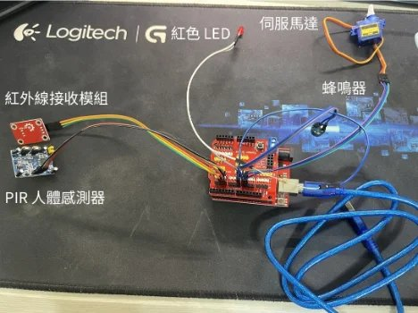
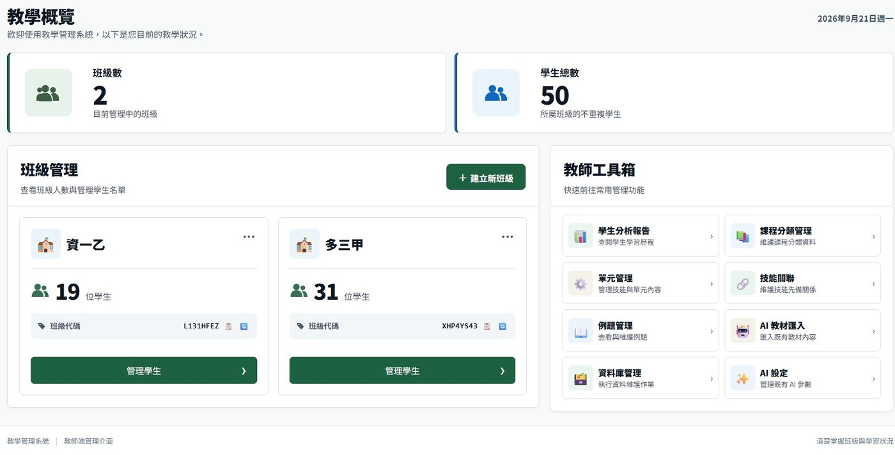
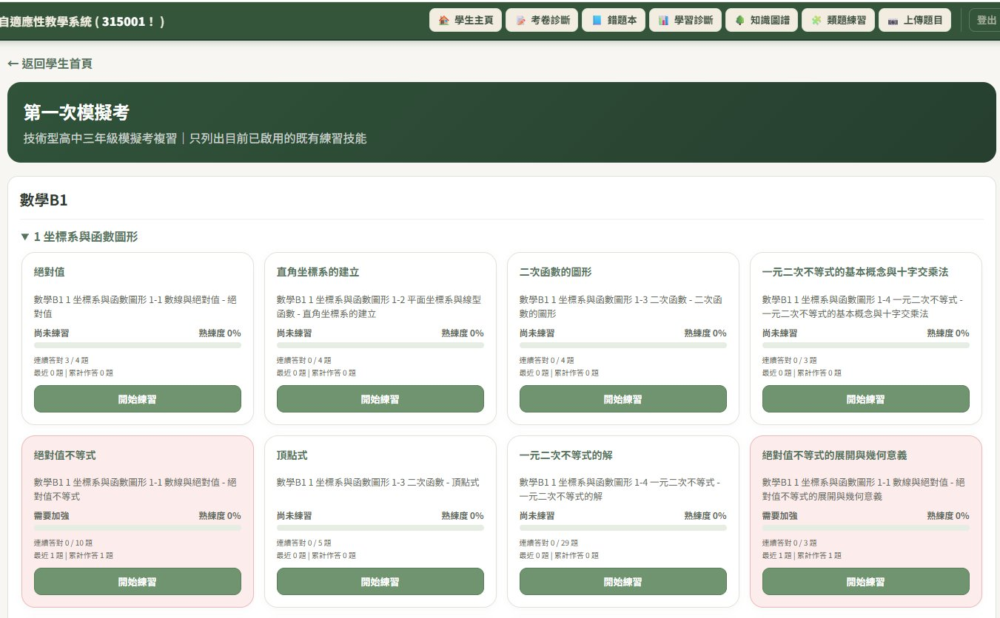
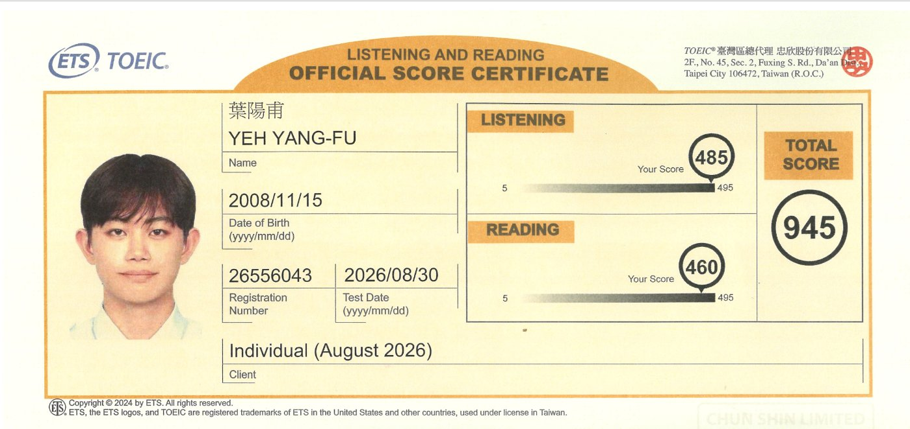
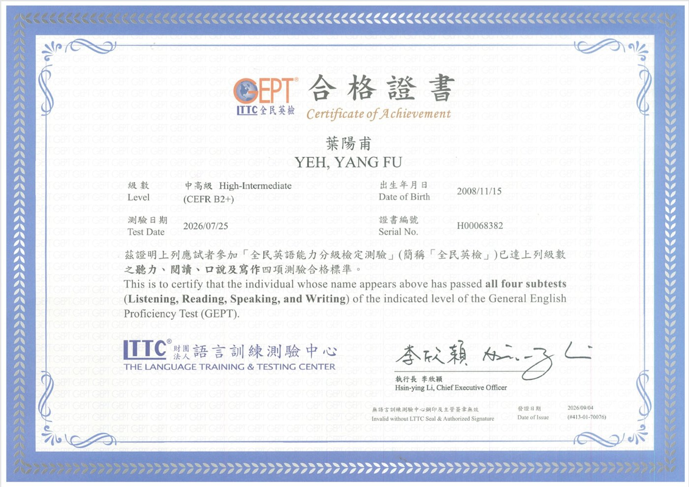
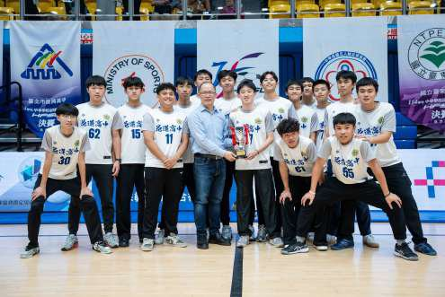

申請人
葉陽甫
就讀學校國立花蓮高級中學
申請校系國立中央大學 資訊電機學院學士班
從實體世界開始
A國中｜多功能智慧遮雨棚
這是我第一次把程式寫進真實裝置。我負責 Arduino 接線、程式與 App Inventor 手機控制：感測器讀到雨滴、溫溼度與距離，Arduino 依三種情境判斷，馬達再收放遮雨棚。任何一處接線或機構出錯，整套系統就沒有反應——程式必須和真實環境一起工作。
B高中｜防呆警報器
我原本一次把整套系統接起來，紅外線訊號卻一直讀不到，也不知道問題在哪一層。後來改成每個模組單獨驗證，再逐一加入人體感測器、蜂鳴器與伺服馬達，最後才整合，從此養成「先拆開、逐層驗證、再整合」的習慣。

▲ 紅外線、PIR、蜂鳴器與伺服馬達
C高一｜FBref 球員數據分析
因為想比較足球員表現，我自學 Python、pandas 與爬蟲整理 FBref（足球數據網站）資料。單一球員成功後我直接擴大請求，IP 卻被限制；VPN 只撐一天，最後才理解 Rate Limiting，改為加入請求間隔。
裝置 → 程式 → 外部系統
FBref 讓我發現，即使程式沒有 bug，不了解所依賴的外部系統仍會失敗。問題從「程式怎麼寫」，變成「整個系統怎麼運作」。
國立中央大學｜資訊電機學院學士班自傳 · 2 / 4
高二時我想要參加育秀盃，指導老師要我們先找身邊真正存在的問題。我問在高職教數學的父親，他說同一班學生程度差距很大，老師難以在同一堂課替不同學生安排不同進度的練習與回饋。這成為我與兩位同學製作「自適應性輔助學習系統」的起點。在三人團隊中，我主要負責教材進入系統到學生作答回傳的資料主線，以及 Code-as-Content 的程式題生成；後續也由這條工作延伸出 AST Healer 的研究。
A學生答完之後，下一題往哪走？
作答
→
能力診斷
→
適性決策
→
掌握繼續下一題
不足補前置知識 → AI 助教 → 再作答
為了回答這個問題，系統需要知識結構、足夠的題目、作答紀錄與引導，於是逐步長出下列模組。
Code-as-Content
模型依題目生成 Python → 動態生成題目

▲ 教師端：班級管理與教學工具

▲ 學生端：依知識節點學習
B同一套系統，持續演進
扶輪盃時，系統第一次成為可完整操作的原型；之後我們持續整合教材、題庫、作答與適性流程，到育秀盃已是一套較完整的學習系統。
2026 扶輪盃全國高中 AI 競賽早期原型
高中組第一名
→
第 23 屆育秀盃系統完整成果
全國高中職 AI 應用類金獎
國立中央大學｜資訊電機學院學士班自傳 · 3 / 4
從維運問題找到研究方向
A研究起點
系統長期運作後，反覆呼叫大型模型生成 Python，token、API 成本與延遲持續累積。我嘗試改用本地小模型，但它的程式生成不穩定，於是加入 Scaffolding（先整理工具與流程）與 AST Healer（只修能確定判斷的錯誤）。初版在自建指標 MCRI 下為 41.00 → 94.39 → 97.41。
Gemini API 月費用
10 月峰值 1,560 元
第 66 屆東區科展優等・未晉級全國
→
第 25 屆旺宏科學獎全領域 846 件
全國決賽 20 強→
入圍決賽後收到評審建議97.41 能證明什麼？
B為旺宏決賽重新驗證
Math16｜16 道公開會考題 × 3 模型 × 4 Prompt 條件 × 5 種子 ＝ 960 單元
4 題｜規則開發 240 單元
建立 Prompt／Healer 規則
12 題｜正式測試 720 單元
規則全部凍結・Healer 不讀答案
比較條件｜原始題目 → 一般規格 → Domain API → 完整流程鷹架
可以處理
介面／輸出格式・局部程式結構
資料流與組裝・API 規格可判斷的錯誤
不處理
數學答案・核心演算法
題意理解・需重新推理的問題
2.63% 與初版 MCRI 97.41 並非同一指標；新版實驗界定的是 Healer 真正能安全介入的範圍。
C另一個發現｜工具多，不代表小模型會用
單純加入 API 資訊，兩個 Qwen 模型在部分條件下反而下降。延伸驗證比較「只給工具選單」與「同一套工具＋完整流程」：補上參數來源、呼叫順序、資料流與答案組裝後，部分小模型明顯改善。Scaffolding 先把工具選擇、參數來源與處理流程整理清楚，降低小模型自行規劃的負擔。
新的問題：不同能力的模型與平台如何分工？
我原本只想降低大型模型的成本與延遲；新實驗讓我看到，小模型能不能工作，和工具、流程怎麼設計有很大關係。而當我嘗試讓本地小模型承接部分工作時，也注意到另一個問題：模型放在哪裡執行、可以使用多少運算資源，同樣會影響整個系統。我因此開始注意 Edge AI、嵌入式系統與軟硬體協同。我還沒做到真正的裝置端部署，但想繼續弄清楚模型、工具與平台該怎麼分工。
國立中央大學｜資訊電機學院學士班自傳 · 4 / 4
延伸能力｜英文溝通 × 足球競技
A英文溝通英文是我查技術資料、讀論文的重要工具
TOEIC 多益
945／990
金色證書・聽力 485／閱讀 460
GEPT 全民英檢
中高級 四項通過
聽 111・讀 87・說 80・寫 80
校內英文成績
平均 91｜前 4%
高一至高二英文平均
做 AI 與程式研究後，查模型文件、API 說明和國外技術文章時，我多半直接看英文原文；指導老師要我讀研究論文，我也能直接讀英文版本。演說和作文的練習，則讓我習慣先把內容整理清楚，再說出來、寫出來。
・花蓮縣英語文閱讀能力競賽｜英文作文高中 A 組甲等
・校內英語演說｜初賽一年級第一名、複賽全年級第四名
・校內英文作文競賽｜二年級第二名


▲ TOEIC 成績單／GEPT 中高級合格證書
B足球競技從國小一路踢到高中的長期投入
113 學年度 中等學校足球聯賽（5 人制）
全國第六名
全國 63 隊 → 複賽 16 強 → 決賽 8 強
→
114 學年度 中等學校足球聯賽（5 人制）
全國第五名
全國 57 隊 → 複賽 16 強 → 決賽 8 強
・兩年皆為正式主力球員（背號 42），連續兩年打入全國決賽 8 強
・國三擔任花崗國中男子足球隊隊長，出賽全國國男甲級聯賽
・全國青年盃足球錦標賽（11 人制）公開組第五名
高中做專題、準備科展和旺宏的同時，我一直維持校隊訓練與全國聯賽。長期練球讓我習慣照固定節奏投入、接受場上的角色分工，比賽壓力大時也比較能穩住自己。

▲ 114 學年度全國決賽，花蓮高中代表隊合影
國立中央大學｜資訊電機學院學士班讀書計畫與申請動機 · 1 / 2
A目前會做的
Python／資料
爬蟲・pandas・xlwings・Rate Limiting
大型 AI 系統（團隊）
教材匯入・Code-as-Content・Web・模型串接
研究／可靠度
Scaffolding・AST Healer・held-out 驗證
B還沒學完整的，以及我怎麼發現的
APCS 觀念題拿到 5 級，實作只有 2 級。我看得懂程式，也能把系統拆開，但真的要把題目轉成演算法並穩定寫出來，我還不夠熟。
觀念 92 分／5 級實作 135 分／2 級
過去我比較專注在程式本身。現在研究碰到本地模型和資源限制，我開始想知道程式真正在電腦裡執行時發生了什麼，記憶體和運算資源又是怎麼被管理的。
Arduino 時，我會接感測器、控制伺服馬達，也會逐段除錯，但電路為什麼這樣接、微處理器怎麼執行程式，我其實還沒正式學過。現在研究又碰到本地模型與運算資源，我更想把這一層補起來。
C每段經驗卡在哪裡
經驗
卡住的問題
要補的基礎
Arduino／感測控制
沒學過電路原理
電路・數位邏輯・微處理機
APCS／程式實作
把題目轉成演算法還不夠穩
資料結構・演算法
大型 AI 系統
越大越難維護除錯
作業系統・軟體工程
本地小模型嘗試
為降低 API 成本與延遲嘗試本地模型，開始注意模型能力與運算平台的限制
計算機組織・嵌入式系統
國立中央大學｜資訊電機學院學士班讀書計畫與申請動機 · 2 / 2
申請動機：模型要放在哪裡跑？
01我開始在意的問題
一開始我只是想把大型模型的 API 成本和等待時間降下來，所以試著讓本地小模型接手一些重複工作。實際做下去之後，我開始注意一件以前很少想的事：同一個模型放在哪裡跑、能用多少記憶體和運算資源，會直接影響整個系統。
我也因此開始注意 Edge AI。我還沒有做過真正的裝置端部署，但想繼續弄清楚：哪些工作適合留在雲端，哪些可以交給本地較小的模型，兩邊該怎麼分工。這些問題光把 Python 寫好回答不了，所以我想補計算機組織、數位邏輯、微處理機和嵌入式系統——它們正好是我現在看不懂的那一層。
02為什麼現在想先把兩邊都學好
目前的研究同時碰到 AI 系統與計算平台，我希望先把兩側的基礎真正學過，再用修課與專題經驗決定往哪一層深入。
03為什麼是中央資電
中央資電採院進院出，大一、大二先建立電機、資訊與通訊的跨領域基礎，大一也有獨立學習研究的訓練，之後再依興趣選擇專長。對我來說，這正好能先把專案裡「碰過但沒有正式學過」的資訊與電機基礎補起來；等真正修過課、做過專題，再決定往電機、資工、通訊或網路哪一側深入。
04進入中央後的三階段學習路徑
優先補程式設計、資料結構、離散數學、電路與數位邏輯等資電基礎，弄懂以前「會用」的東西為什麼這樣運作；也利用獨立研究，整理小模型與 AST Healer 的研究問題。
進一步修習演算法、計算機組織、作業系統、微處理機與嵌入式系統等課程，用這些知識重新看本地模型的記憶體、運算與延遲問題，再依修課與專題經驗選擇專長。
若興趣仍在 AI 系統與計算平台之間，希望透過專題探索可靠智慧系統、Edge AI 與軟硬體協同：哪些工作適合留在雲端，哪些能交給本地模型？運算資源又會怎麼改變系統設計？